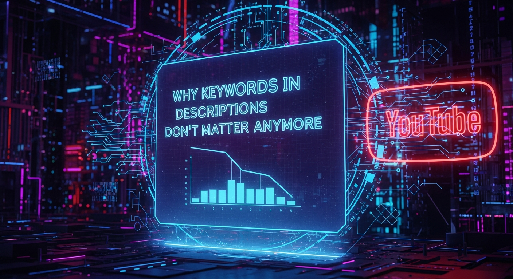

The landscape of online video optimization is in a perpetual state of flux, a dynamic arena where yesterday's best practices can swiftly become today's archaic rituals. For years, the mantra for YouTube creators included the diligent stuffing of keywords into video descriptions, a practice believed to be essential for signaling relevance to the platform's sprawling algorithms. Fast forward to 2026, and this foundational pillar of traditional YouTube SEO has not merely crumbled; it has largely become irrelevant. The paradigm shift is profound, driven by an exponential leap in artificial intelligence and machine learning capabilities that now allow YouTube to understand content with an unprecedented level of nuance and context. This isn't just an evolution; it's a revolution, rendering the old ways of keyword-centric description writing obsolete for algorithmic ranking. Creators who cling to these outdated tactics risk being left behind in a new era where genuine value, deep contextual understanding, and user satisfaction reign supreme.
In the nascent days of YouTube, much like early web search engines, the algorithm was relatively simplistic. It relied heavily on explicit textual signals: titles, tags, and, crucially, descriptions. If your video was about "how to bake sourdough bread," then saturating your description with variations of "sourdough," "baking," "bread," and "recipe" was a legitimate, albeit somewhat crude, strategy to signal relevance. The algorithm would crawl these text fields, match them against search queries, and surface videos accordingly. This approach, while effective for its time, was inherently limited and susceptible to manipulation through keyword stuffing, leading to a poorer user experience when irrelevant but keyword-rich videos would surface.
However, the past decade has witnessed an extraordinary acceleration in artificial intelligence and machine learning research and application. YouTube, backed by Google's formidable AI divisions, has been at the forefront of integrating these advancements into its core recommendation and search algorithms. By 2026, the algorithm has transcended mere textual matching. It now employs sophisticated natural language processing (NLP) to understand the semantic meaning of words and phrases, moving beyond exact keyword matches to grasp the underlying intent and topic. For instance, it understands that "yeast infection remedy" and "natural cure for candidiasis" are semantically linked, even if the exact keywords don't appear in the description. This semantic understanding means the algorithm can infer the subject matter of a video from a broader contextual analysis of the title, spoken words (via advanced speech-to-text transcription), and even on-screen text and objects (via computer vision).
The game-changer, however, lies in the integration of deep learning models that analyze a multitude of non-textual signals. YouTube's AI now meticulously processes the audio track of your video, not just for transcription, but for sentiment, tone, and even identifying specific entities and concepts being discussed. Computer vision algorithms scrutinize every frame, identifying objects, faces, scenes, and actions. If your video features a person demonstrating a specific technique, the AI can recognize the tools being used, the actions being performed, and the environment in which they occur. This multi-modal analysis – combining text, audio, and visual data – creates an incredibly rich and accurate understanding of the video's actual content, rendering the explicit declaration of keywords in the description largely redundant for the algorithm's internal classification system. It no longer needs you to tell it what your video is about; it understands it intrinsically from the content itself. This fundamental shift means creators must now focus on creating genuinely relevant and high-quality content, rather than trying to outsmart an increasingly intelligent machine with textual trickery.
With the algorithmic advancements detailed above, YouTube's primary objective has crystallized: to keep users engaged on the platform for as long as possible, delivering content that truly satisfies their intent. By 2026, the algorithm is less concerned with what a creator *says* their video is about in a description and far more concerned with how users *interact* with it. This makes user intent fulfillment and engagement metrics the undeniable "new North Star" for YouTube SEO. The algorithm has evolved into a highly sophisticated predictor of user satisfaction, constantly learning from billions of user interactions to surface content that is most likely to resonate with individual viewers at any given moment.
When a user types a query into the search bar or navigates to their homepage, YouTube's AI doesn't just look for keyword matches. It attempts to decipher the user's underlying intent – are they looking for a quick tutorial, in-depth analysis, entertainment, inspiration, or a specific product review? Then, it serves videos that have historically proven to satisfy similar intents for other users. How does it know which videos satisfy intent? Through a complex array of engagement signals. The most critical of these is "watch time" – the total amount of time viewers spend watching your video and, even more importantly, "session duration," which measures how long a user stays on YouTube after watching your video. If your video leads them to watch more content, either yours or others', that's a powerful signal of satisfaction and relevance.
Beyond watch time, other engagement metrics play a crucial role. "Click-through rate (CTR)" on your thumbnail and title indicates how compelling your content appears in search results or recommendations. A high CTR suggests your video promises to deliver what the user is looking for. Once they click, "audience retention" graphs provide granular data on exactly which segments of your video viewers are watching and where they drop off. High retention throughout the video signals sustained interest and value. Furthermore, explicit engagement signals such as likes, dislikes, comments, shares, and even whether a viewer subscribes or hits the notification bell, all contribute to the algorithm's understanding of content quality and relevance. A video that sparks discussion, generates shares, and encourages subscriptions is unequivocally deemed more valuable than one that is merely keyword-optimized but fails to captivate its audience.
The implication for creators is profound: the focus must shift from algorithmic keyword pleasing to genuine audience satisfaction. Crafting content that is inherently engaging, provides clear value, and keeps viewers hooked is now paramount. A well-optimized description with keywords means little if viewers click away after 30 seconds. Conversely, a video with an average description but exceptional watch time and engagement will be amplified by the algorithm, as it recognizes that the content is fulfilling actual user needs. This user-centric approach ensures that the platform promotes high-quality, relevant content, fostering a more engaging and valuable ecosystem for everyone. Therefore, understanding your audience, crafting compelling narratives, and delivering consistent value are the true SEO strategies for 2026, far outweighing any perceived benefit from keyword-stuffed descriptions.
The cornerstone of why keywords in descriptions have lost their algorithmic potency by 2026 lies in YouTube's advanced capabilities for content contextualization. The platform's artificial intelligence no longer treats a video as a collection of metadata strings; instead, it processes it as a rich, multi-dimensional entity that can be understood in its entirety. This deep understanding goes far beyond simply transcribing spoken words or identifying objects. It involves creating a comprehensive "knowledge graph" of your video's content, linking it to broader topics, entities, and concepts across the entire web and YouTube's vast library.
One of the most significant advancements is in natural language processing (NLP) applied not just to titles, but to the full transcript of your video. Advanced automatic speech recognition (ASR) technology has reached near-human accuracy, allowing YouTube to generate highly precise transcripts of everything said in your video. But it doesn't stop there. NLP models then analyze these transcripts for semantic meaning, identifying key entities (people, places, organizations), extracting topics, and understanding the relationships between different concepts discussed. For example, if you mention "solar panels" and "renewable energy" in your video, the AI understands their symbiotic relationship and categorizes your video within the broader "sustainable technology" sphere, even if those exact phrases aren't explicitly typed into your description.
Complementing NLP is sophisticated computer vision. YouTube's AI can now accurately identify objects, scenes, activities, and even emotions displayed on screen. If your video features a cat playing with a laser pointer, the AI sees the cat, the laser pointer, recognizes the action of "playing," and understands the context of "pet entertainment." This visual understanding is incredibly powerful because it's objective and difficult to manipulate. Furthermore, advancements in audio analysis allow the AI to detect not just spoken words but also background music, sound effects, and even the emotional tone of the speaker, all contributing to a richer contextual profile of the video. If a tutorial has clear, calm narration and positive ambient sounds, this contributes to its perceived quality and relevance.
The combination of these technologies enables YouTube to build a highly nuanced and accurate representation of your video's content. It can connect your video to relevant search queries and related topics based on what is actually shown and said, rather than relying on a creator's self-declaration in the description. This contextualization also extends to understanding user behavior patterns. If millions of users who watch videos about "vegan recipes" also frequently watch videos about "sustainable living," YouTube's AI will learn this relationship and recommend content accordingly, irrespective of explicit keyword connections in descriptions. The algorithm's ability to infer context, identify entities, and map relationships makes the old strategy of keyword-stuffing descriptions a futile exercise. The focus must now be on creating genuinely rich, clear, and contextually relevant content that the AI can easily understand and categorize through its advanced sensory inputs.
While the algorithmic weight of keywords in YouTube descriptions has dwindled to near insignificance by 2026, it would be a critical mistake to assume descriptions themselves are entirely irrelevant. Their purpose, however, has fundamentally shifted from serving the algorithm to serving the viewer. In this new era, the description is a powerful tool for enhancing user experience, providing value, facilitating interaction, and establishing credibility – aspects that indirectly contribute to SEO by fostering engagement and trust, but not through direct keyword matching.
Turn your scripts into professional videos automatically. Use code PAVEL20 for 20% OFF!
START CREATING WITH PICTORYFirstly, descriptions are now paramount for providing additional context and information that might not fit or be appropriate within the video itself. This includes detailed show notes, links to external resources (your website, social media, product pages), citations for data or research mentioned, and expanded explanations of complex topics. Imagine a cooking tutorial; the description can host the full recipe, ingredient lists, and links to where specific tools can be purchased. For educational content, it can provide supplementary reading, glossaries, or even downloadable resources. This transforms the description into a valuable extension of the video content, providing utility that keeps viewers engaged and satisfied, which in turn signals to YouTube that your content is valuable.
Secondly, calls to action (CTAs) are incredibly effective when strategically placed in the description. Encouraging viewers to subscribe, like, comment, share, or visit a specific link helps to guide their post-viewing behavior. While direct algorithmic boosts from these CTAs are minimal, the resulting engagement signals (subscriptions, comments) are highly valued by the algorithm. A well-crafted description can also be used for storytelling, providing a brief narrative arc or behind-the-scenes insights that deepen a viewer's connection to the creator and the content. This human element, fostering a sense of community and authenticity, is something algorithms can detect through sustained viewer loyalty and interaction.
Accessibility is another crucial, often overlooked, role of descriptions. For viewers with hearing impairments or those who prefer to consume content without audio, a detailed description can serve as a textual summary or even a partial transcript, making the video more inclusive. Furthermore, timestamps within the description are invaluable for longer videos, allowing viewers to navigate directly to specific segments of interest. This enhances the user experience by respecting their time and making the content more digestible. When viewers can easily find what they're looking for, they are more likely to stay on the platform and return to your channel, positively impacting metrics like watch time and session duration.
Finally, descriptions contribute significantly to brand building and establishing authority. A professionally written, informative description reinforces your expertise and commitment to quality. It's a space to articulate your channel's mission, showcase your personality, and consistently communicate your brand's voice. While keywords no longer directly influence algorithmic ranking from descriptions, a well-structured, informative, and user-centric description contributes to a positive overall channel experience, which indirectly supports growth and visibility by cultivating a loyal, engaged audience. The focus is no longer on manipulating an algorithm with text, but on enriching the viewer's journey and providing genuine value.
As the algorithmic landscape of YouTube continues to mature, optimizing for 2026 and beyond demands a holistic approach that prioritizes genuine value, user engagement, and a deep understanding of audience behavior over antiquated keyword stuffing. The future of YouTube SEO isn't about isolated tactics; it's about integrating every aspect of your content creation and distribution strategy to resonate deeply with both human viewers and YouTube's sophisticated AI. This means shifting focus dramatically from textual declarations to intrinsic content quality and strategic audience nurturing.
The journey to effective YouTube SEO in 2026 begins long before a video is uploaded, starting with robust audience research. Understanding your target demographic – their pain points, interests, language, and viewing habits – is paramount. Tools that provide insights into trending topics, popular search queries (even if keywords aren't in descriptions, they are still how users express intent), and competitor analysis are invaluable here. This research informs content ideation, ensuring you're creating videos that genuinely address a need or interest within your niche. High-quality content is the non-negotiable foundation; this includes excellent audio, clear visuals, and a compelling narrative or informative structure that holds attention. A poorly produced video, regardless of its topic, will struggle to retain viewers.
Beyond the content itself, the "packaging" of your video is critically important. Your video thumbnail and title are the first, and often only, opportunity to capture a viewer's attention in a crowded feed. Thumbnails must be clear, visually appealing, and accurately represent the video's content without being misleading clickbait. A high click-through rate (CTR) is a strong signal to YouTube that your video is relevant and desirable. Titles should be concise, intriguing, and accurately reflect the video's core topic, leveraging natural language that appeals to human curiosity rather than just keyword density. The combination of a strong thumbnail and title works synergistically to entice the initial click, setting the stage for the all-important watch time and audience retention.
Once a viewer clicks, their journey begins, and every second counts. Crafting an engaging introduction that hooks viewers within the first 15-30 seconds is crucial for preventing early drop-offs. Structuring your video logically, maintaining a good pace, and providing clear value throughout are essential for maximizing audience retention. YouTube's audience retention graphs in Analytics provide granular data on where viewers drop off, offering invaluable feedback for future content improvement. Furthermore, fostering a vibrant community around your channel through active engagement in comments, responding to questions, running polls, and even hosting live streams, signals to YouTube that your channel is a hub of activity and value. These interactions build loyalty, encourage repeat viewership, and generate positive signals that the algorithm increasingly values. Cross-promotion on other social media platforms and embedding videos on relevant websites can also drive external traffic and further amplify your content's reach, contributing to a truly holistic SEO strategy that transcends mere description optimization.
Navigating the complex, AI-driven landscape of YouTube SEO in 2026 requires a new arsenal of tools and solutions, moving beyond simplistic keyword research to sophisticated analytics, audience intelligence, and content optimization platforms. The focus has shifted from finding keywords to understanding user behavior, content performance, and the intricate workings of YouTube's recommendation engine. These tools empower creators to make data-driven decisions, refine their content strategy, and truly connect with their audience.
At the forefront of this new toolkit are advanced analytics platforms, with YouTube Analytics itself being the most indispensable. Far from just showing views, YouTube Analytics now offers deep insights into audience demographics, watch time, audience retention graphs (showing exactly where viewers drop off), traffic sources, and even the performance of specific video segments. Understanding these metrics is critical for identifying what resonates with your audience and where improvements are needed. Third-party tools like VidIQ and TubeBuddy have also evolved significantly, offering features that go beyond keyword suggestions to provide competitor analysis, trend alerts, channel audits, and A/B testing for thumbnails and titles. While their keyword tools still exist, their value now lies more in understanding overall channel health, audience engagement patterns, and strategic content planning based on performance data.
Audience intelligence platforms are becoming increasingly vital. These tools help creators delve deeper into the psychographics and viewing habits of their target audience. They can identify broader interests, related channels, and even the types of content formats that perform best within a specific niche. This allows creators to move beyond assumptions and create content that is precisely tailored to their audience's desires, leading to higher engagement and satisfaction. While some of these capabilities are integrated into advanced versions of VidIQ or TubeBuddy, dedicated market research tools or social listening platforms can provide an even richer understanding of audience sentiment and emerging trends, helping creators predict what their audience will want to watch next.
For content planning and ideation, AI-powered writing assistants and trend analysis tools are gaining traction. While not directly for YouTube SEO, these can help generate compelling video scripts, outline talking points, and identify emerging topics based on real-time data. Tools that analyze search trends beyond simple keyword volume, looking at semantic clusters and user intent, are also critical for identifying content gaps and opportunities. Furthermore, modern video editing and production software, while not SEO tools per se, are integral. High-... and implement these strategies to ensure long-term success.
In summary, staying ahead of these trends is the key to business longevity and security. By following this guide, you maximize your growth and ensure a stable digital future.
Don't wait for the headlines. Our Private Telegram Channel delivers real-time AI security updates and digital wealth strategies before they go viral. Stay protected. Stay ahead.
⚡ JOIN THE 1% NOW